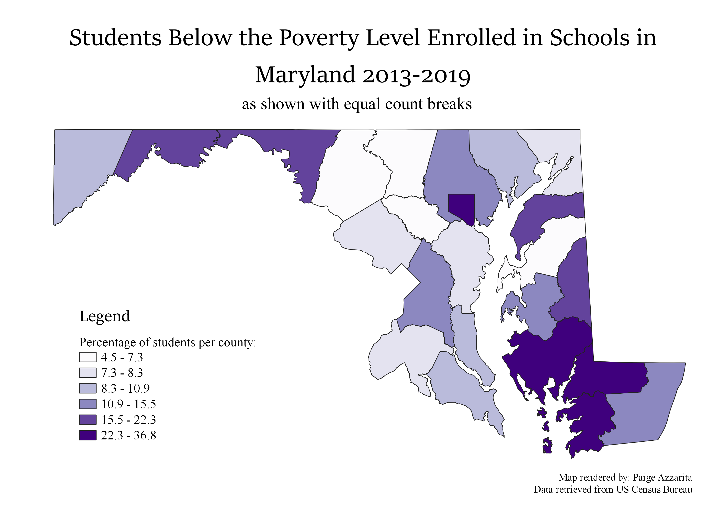
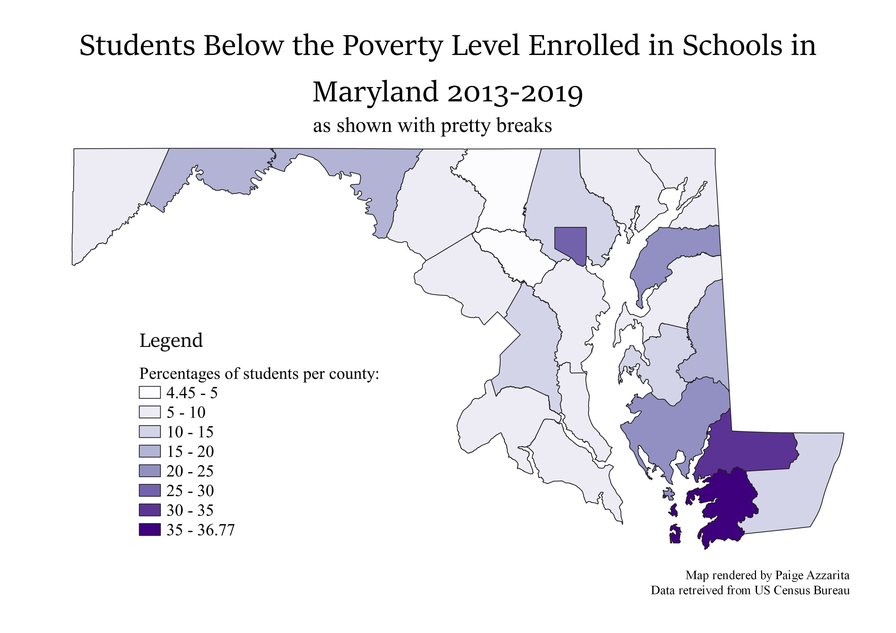

Homework 8: Ratios and Categories of Census Data
Paige Azzarita
In this assignment, I created several maps based on data collected from the US Census Bureau about the numbers of students in Maryland that live below the poverty level and are enrolled in schools.
The numeric values depicted in the maps below are percentage values derived from the number of students below the poverty line divided by the total number of students.
The data is projected as a chloropleth map, but uses different data categorization methods in each map.
Equal Count Breaks
This method categorizes data into the same number of data points per section. Since there are six sections here, there are three categories per section in increasing order of percentage value.
This method of categorization is useful for portraying standardized data points. While this is good for showing the ranking of the data values in comparison to each other, it does not show how similar the values within the categories are.

Natural Breaks
Natural breaks separates values based on the clusters that the data has already formed. There is not a set number of values per section, but the data points within each section will have the smallest differences between them.
This method of categorizing data is useful because it emphasizes the similarity of the values shown. However, this data organization would be less useful for portraying data that had outlier values, as that would skew the amount of points in a cluster, and make dissimilar values appear to be more closely related.

Pretty Breaks
The pretty break categorization method is similar to the natural breaks method, where the data is characterized according to the naturally occurring clusters in the data set. However, this method is different because also changes the number of categories displayed to match the number of clusters found in the data.
This method is useful for data that is very clustered, and would reduce any divisions or ill-fitting values created by the section divisions of ntural clusters. The downside to this method is that the number of categories is highly specific to the dataset, which could result in such a high number of categories (especialy for large datasets) that the legend is confusing and the map becomes harder to read.

Data used for this project
CSV dataset
Maryland Counties Shapefile